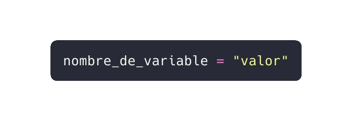
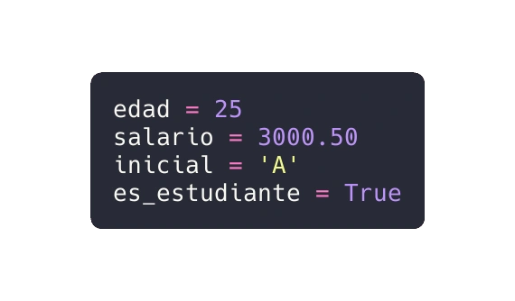
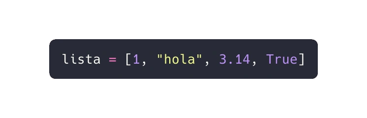
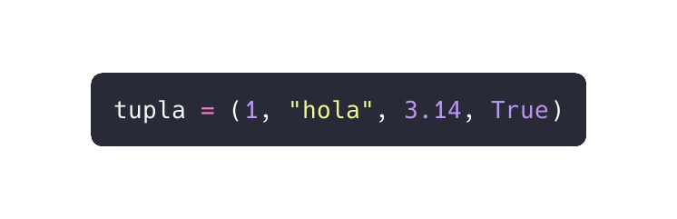
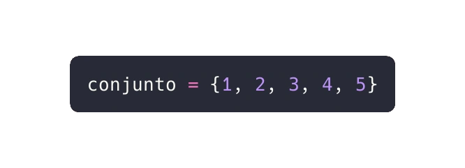
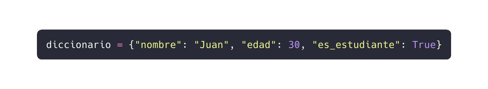

En este capítulo, exploraremos cómo declarar y utilizar variables y constantes en Python. Estos conceptos son fundamentales para cualquier programador, ya que nos permiten almacenar y manipular datos en nuestros programas. A lo largo del texto, proporcionaré ejemplos de código real para ilustrar cada punto.
Una variable en Python es un espacio de almacenamiento en la memoria que puede contener datos. Estos datos pueden modificarse durante la ejecución del programa. Las variables nos permiten trabajar con valores dinámicos y realizar cálculos.
Para declarar una variable, especificamos el nombre de la variable seguido de un signo igual y el valor que queremos asignarle. La sintaxis general es:
Aquí hay algunos ejemplos de declaraciones de variables:
En el ejemplo anterior:
edad es una variable que almacena un entero.salario es una variable que almacena un número de punto flotante.inicial es una variable que almacena un carácter.es_estudiante es una variable booleana.Una constante es un valor fijo que no cambia durante la ejecución del programa. En Python, las constantes no son soportadas de manera nativa como en otros lenguajes, pero por convención, se utilizan variables en mayúsculas para representarlas.
En este ejemplo, PI se define como una constante con el valor de 3.1416.
Los datos son valores que representan información. Pueden ser números, caracteres, texto, fechas o cualquier otra entidad que necesitemos en nuestros programas. Los datos son la materia prima con la que construimos soluciones informáticas.
En la programación, los datos son la esencia de cualquier aplicación. Representan información que se procesa, almacena y manipula. En Python, los datos se clasifican en varios tipos, incluyendo números, cadenas, listas, tuplas, conjuntos y diccionarios. Vamos a explorar cada uno de ellos en detalle.
Python tiene varios tipos de datos incorporados que se utilizan para representar los datos en los programas. Aquí están algunos de los más comunes:
int), números de punto flotante (float), y números complejos (complex).str) se utilizan para representar texto.list) son colecciones ordenadas de elementos.tuple) son colecciones ordenadas e inmutables de elementos.set) son colecciones no ordenadas de elementos únicos.dict) son colecciones no ordenadas de pares clave-valor.bool) representan verdadero o falso.Los tipos de datos estructurados en Python incluyen listas, tuplas, conjuntos y diccionarios:
Las listas son colecciones ordenadas de elementos que pueden ser de diferentes tipos. Por ejemplo, una lista puede contener [1, "hola", 3.14, True].
Las tuplas son similares a las listas, pero son inmutables, lo que significa que no pueden ser modificadas una vez creadas. Por ejemplo, una tupla puede ser (1, "hola", 3.14, True).
Los conjuntos son colecciones no ordenadas de elementos únicos. Por ejemplo, un conjunto puede ser {1, 2, 3, 4, 5}.
Los diccionarios son colecciones no ordenadas de pares clave-valor. Por ejemplo, un diccionario puede ser {"nombre": "Juan", "edad": 30, "es_estudiante": True}.
